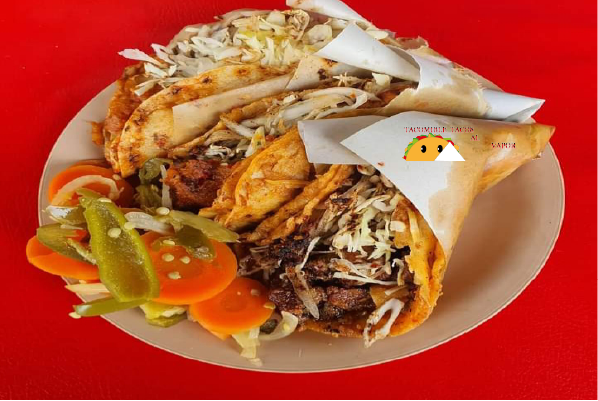

NOSOTROS



Desarrollado por: Alex Dayanara Villafaña Suarez mat:02122631 Grupo:606
Plantel NUEVA TIJUANA
Desarrollado por: Alex Dayanara Villafaña Suarez mat:02122631 Grupo:606
Plantel NUEVA TIJUANA